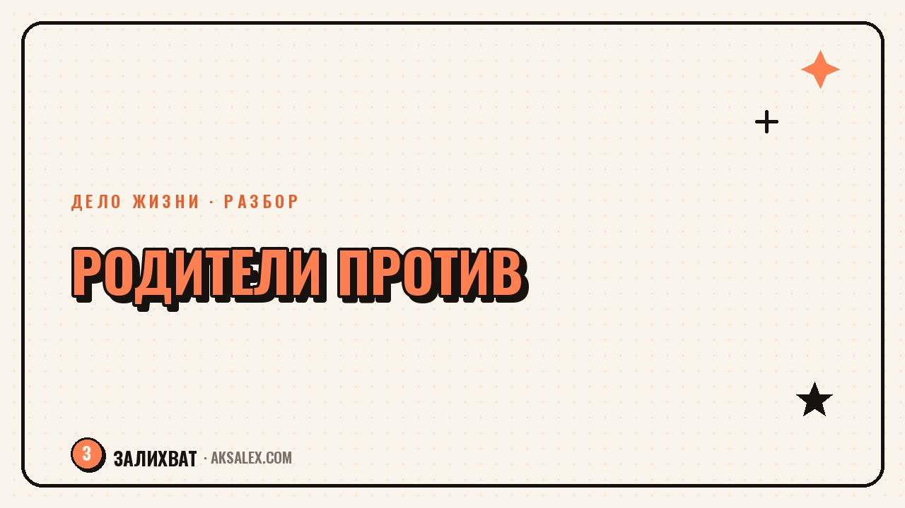

Как найти своё дело, если родители против

Ты наконец понимаешь, чем хочешь заниматься, а в ответ слышишь «это несерьёзно», «на этом не заработаешь» или просто тяжёлое молчание за семейным столом. Родительское неодобрение бьёт сильнее, чем кажется со стороны: оно включает детский страх разочаровать тех, кто тебя растил, даже если тебе давно не пятнадцать. Разберёмся, откуда растёт такое сопротивление, как отличить заботу от страха за собственный покой и что реально можно сделать, чтобы двигаться к своему делу без вечной войны за столом.
Почему родители сопротивляются именно твоему выбору
Чаще всего дело не в том, что твой выбор плохой, а в том, что он непонятный для человека, который вырос в другой системе ценностей. Поколение родителей часто формировалось в условиях, где стабильность и диплом были вопросом выживания. Твой разговор про своё дело или смену профессии в их системе координат звучит как отказ от безопасности.
Второй слой - тревога за тебя, которая выражается в форме критики, потому что прямо сказать «я боюсь за тебя» сложнее, чем сказать «это не профессия». Третий слой - нереализованные желания самого родителя: если он когда-то отказался от мечты ради стабильности, твой шаг может задевать его собственную старую боль.
Три типа родительского «нет»
- Тревога за твоё будущее - искренний страх, что ты не справишься финансово.
- Непонимание самой сферы - родитель просто не представляет, как на этом зарабатывают.
- Проекция своей истории - сравнение с собственным нереализованным путём, часто неосознанное.
Как отличить заботу от страха, который не про тебя
Полезный вопрос себе: родитель переживает о конкретных рисках (нет дохода, нет плана) или о самой идее, что ты можешь жить иначе, чем он? Первое - забота, с которой можно работать через конкретику: план, бюджет, шаги. Второе - уже про его картину мира, и расчёты её не изменят, потому что дело не в цифрах.
Родитель может искренне любить тебя и при этом быть категорически неправ в оценке твоего пути. Любовь и правота - разные вещи, и держать их отдельно здорово снижает градус вины.
Если сомневаешься, попробуй спросить прямо: «Чего ты боишься больше всего, если я это сделаю?» Конкретный страх - про деньги, про осуждение, про безопасность - можно обсуждать по существу. Общее «мне не нравится» без аргументов обычно означает, что дело не в фактах.
Что реально помогает двигаться дальше
Первый шаг - не ждать одобрения как условия для старта. Разрешение действовать ты выдаёшь себе сама, а не получаешь от родителей. Это не значит игнорировать их мнение совсем - значит перестать делать его обязательным пунктом в плане «сначала одобрят, потом начну».
Второй шаг - перевести разговор с эмоций на факты там, где это возможно. Если родители боятся за доход, покажи план: первые клиенты, минимальный бюджет, запасной вариант. Это не убедит того, кто сопротивляется из проекции, но снимает тревогу у тех, кто боится за твою финансовую безопасность.
Что делать с сильным давлением
- Сократи количество отчётов о прогрессе - не обязана докладывать о каждом шаге, если это превращается в допрос.
- Найди опору вне семьи - друзей, сообщество по своей сфере, наставника, кто видит твой путь без семейной истории внутри.
- Дай себе время на маленькие результаты, прежде чем снова выходить на разговор - аргументы звучат убедительнее с фактами в руках.
Разные стратегии в зависимости от ситуации
| Ситуация | Что обычно не работает | Что реально помогает |
|---|---|---|
| Родители боятся за доход | Споры и обещания без плана | Конкретный план и первые маленькие результаты |
| Родители не понимают сферу | Долгие объяснения терминами | Простой пример: что ты делаешь и для кого |
| Родители сравнивают с собой | Попытки убедить словами | Границы: «это мой путь, не твой» |
| Давление через вину | Оправдания и отчёты каждый день | Сокращение частоты разговоров на тему |
Когда отношения важнее победы в споре
Бывает соблазн доказать родителям, что ты права, через громкий успех - мотивация понятная, но опасная: если строишь дело только ради доказательства кому-то, выгорание наступает быстрее, а цель теряется за желанием быть услышанной. Полезнее строить дело для себя, а отношения с родителями решать отдельно.
Иногда правильный шаг - временно оставить тему в покое: не спорить, не доказывать, а просто жить и делать своё. Результаты со временем говорят громче аргументов, а у родителей появляется время привыкнуть к тому, что раньше звучало пугающе непонятным.
Частые вопросы
Что делать, если родители не поддерживают выбор профессии?
Сначала разберись, боятся ли они конкретных рисков или просто не принимают саму идею перемен. С конкретными страхами работай через план и факты, а с общим неодобрением - через границы и терпение, не ожидая быстрого согласия.
Как объяснить родителям новое дело, если они не понимают сферу?
Не объясняй всё сразу терминами - покажи один простой пример: что конкретно ты делаешь и для кого. Абстрактные объяснения пугают больше, чем понятный частный случай.
Нужно ли обязательно получить одобрение родителей, чтобы начать своё дело?
Нет, одобрение - не обязательное условие для старта. Разумно учитывать мнение близких, но решение действовать принимаешь сама, иначе можно всю жизнь ждать разрешения, которое не придёт.
Как справиться с чувством вины перед родителями при смене пути?
Помогает разделить любовь и правоту: родитель может любить тебя и при этом ошибаться в оценке твоего выбора. Вина часто связана не с реальной виной, а с детской привычкой быть удобной для семьи.
Стоит ли доказывать родителям, что их мнение было ошибочным?
Лучше строить дело ради себя, а не ради доказательства кому-то. Желание доказать создаёт лишнее напряжение, а реальные результаты со временем меняют отношение родителей сами, без споров.
Раз тема оказалась полезной, вот что почитать следующим. Нейросети для маленькой кофейни: меню, соцсети, учёт расходов и общение с клиентами своими силами.
Читать статью →а не вручную